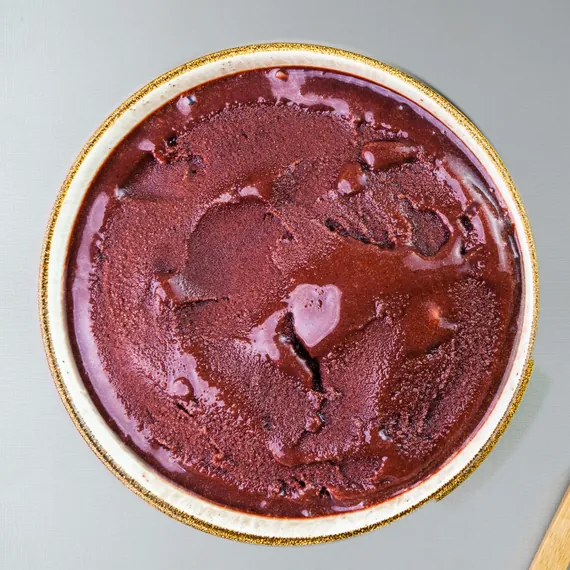
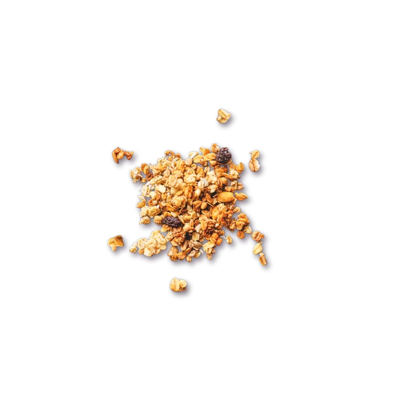
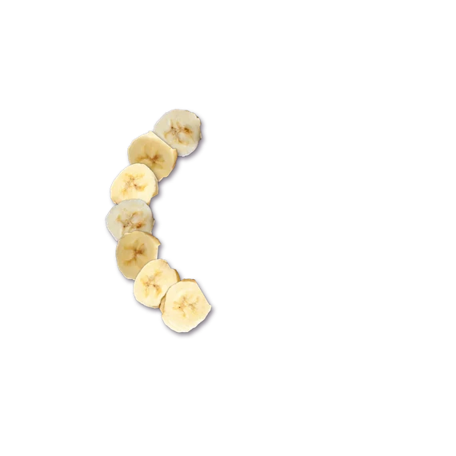
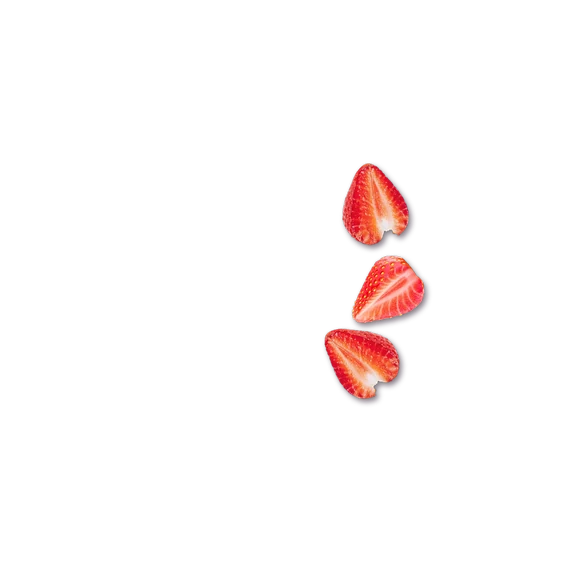
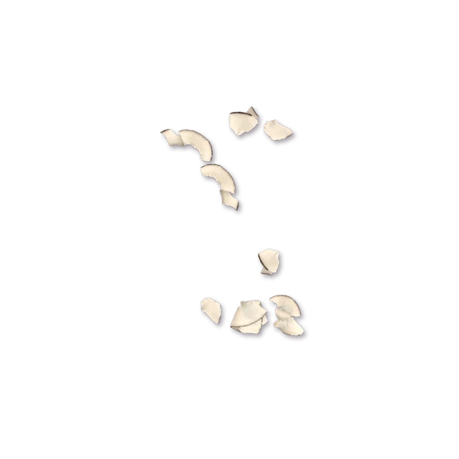
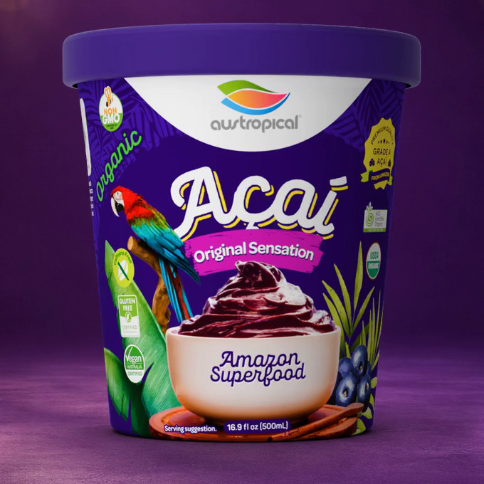
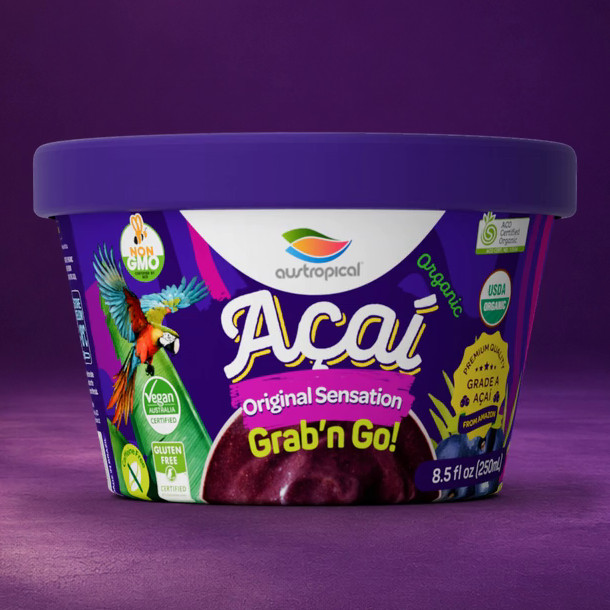
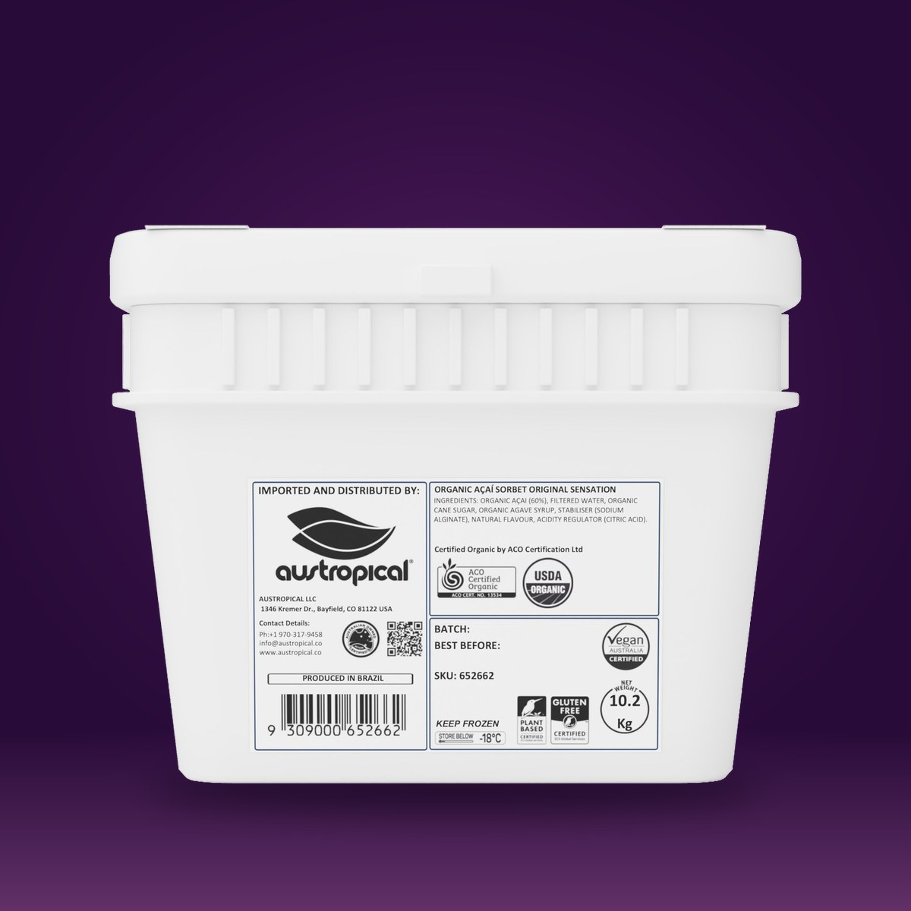

Serving ideas
No blender. Just a scoop.
An açaí bowl at home is a 2/3 cup scoop of sorbet and whatever you put on top. The sorbet is ready to eat from the pint; the toppings are yours. These are serving suggestions, not recipes.
Three steps
Scoop. Top. Eat.
Scoop
2/3 cup (147 g) of sorbet from the pint, straight from the freezer. No blender.
Top
Granola, banana, strawberry, coconut. As much of each as you like.
Eat
Frozen, right away. The pint goes back in the freezer at 0 °F (−18 °C) or below.
Build a bowl
Pick a base. Pick the toppings.
Any of the ten flavors is the base, and the four toppings are the foodservice bowl bar's four. Tap and the bowl changes; every bowl gets a name. Share it, save the picture, or let us surprise you.





Your bowlThe Amazon WorksOrganic Açaí Original SensationA 2/3 cup scoop, with granola, banana, strawberry and coconut.
Serving suggestion; toppings are not included. Açaí Zero Sugar is not a low calorie food. Three flavors are USDA certified organic: Original Sensation, Mango and Coconut. All ten are certified vegan (Vegan Australia).
Three ways to serve
The bowl, the cup, the bar.
-

The bowl at home
A 500 mL pint is about three scoops: three bowls, or one bowl and the rest straight from the pint. It also goes into smoothies and shakes.
Where to buy -

No bowl needed
The 250 mL Grab'n Go cup is one serving with a wooden spoon included: open it, eat it, done.
The ten cups -

The bowl bar
For cafés and dining halls: a 10.2 kg bucket, a scoop and the four toppings. About 69 bowls a bucket, no blender.
The bowl program
For foodservice
The same bowl, scaled: about 69 bowls a 10.2 kg bucket, no blender.
The bowl program